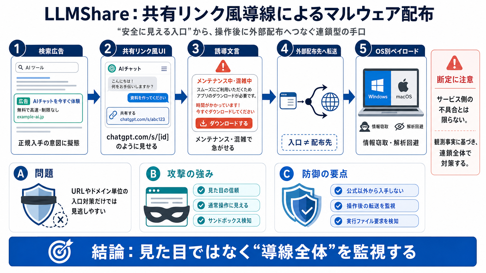

Push Security uncovers LLMShare malvertising campaign ...
The attack exploits the growing ecosystem of third-party platforms that list and compare multiple AI services, turning t…

正規のチャット共有リンク風UIと検索広告を組み合わせ、ユーザーの「普通の操作」をマルウェア配布へ転換する手口が報告されました。
chatgpt.com/s/[unique-id] のような共有リンク“らしさ”を偽装
偽UIで誤認させるドメイン単位の制御だけでは、入口の段階で断ちにくい
入口≠配布先share link風表示（chatgpt.com/s/[id]） → 「ダウンロード」操作 → 外部配布先へ切替 → OS別ペイロード
「ChatGPT desktop app / download」系の検索語を狙う
検索意図に擬態正規っぽい共有リンク風：chatgpt.com/s/[id]
安全誤認外部ドメインへ移動（例：openew[.]app）
配布先へ切替システムメンテ風の警告で“今すぐ対応”に見せる
緊急性を演出デスクトップアプリのダウンロードを促す
通常の取得フローに沿う物理/仮想やセキュリティ関連レジストリキー等を手掛かりに判別
解析回避（Avoid）Odyssey Stealerを落として機微情報を窃取（報告）
情報窃取（Steal）仮想/解析環境の手掛かりを収集して識別
偽の挙動に切替解析再現がズレる／報告が遅れる
実被害に追いつかないURLフィルタ / DNSブロック：一部は効くが限界
見た目が正規最終ダウンロード先・挙動（実行ファイル要求等）まで含める
操作後を追う公式以外からアプリを落とさない／検索広告経由の“ダウンロード”に警戒
拒否をデフォルト化ブラウザ保護・アプリ制御・EDRの振る舞い検知・導線（メール/広告/URL）監視
連鎖の各段で止める正規に見えるURL/画面を入口にしている（報告）
観測ベースどこまでがサービス機能の脆弱性か／公式の対応状況
追加情報が必要UIが正しいため危険判断が遅れる
見た目の欺きサンドボックス検知で封じ込めが遅れやすい
対応の遅延広告→共有風UI→外部配布の“連鎖”を各段で監視すべき
多層監視The attack exploits the growing ecosystem of third-party platforms that list and compare multiple AI services, turning t…
See and control shadow SaaS in the browser. See and control AI apps in the browser. ## Attackers are abusing the shared …
... deliver malware. But this is a lot smarter than the shared chat ... delivery infrastructure for convincing, context-…
Attackers are abusing the shared content features of AI chatbot platforms — ChatGPT and Claude — to deliver malware thro…
LLMShare: how attackers are turning AI chatbot pages into malware delivery platforms. intelligence (threat actor activit…